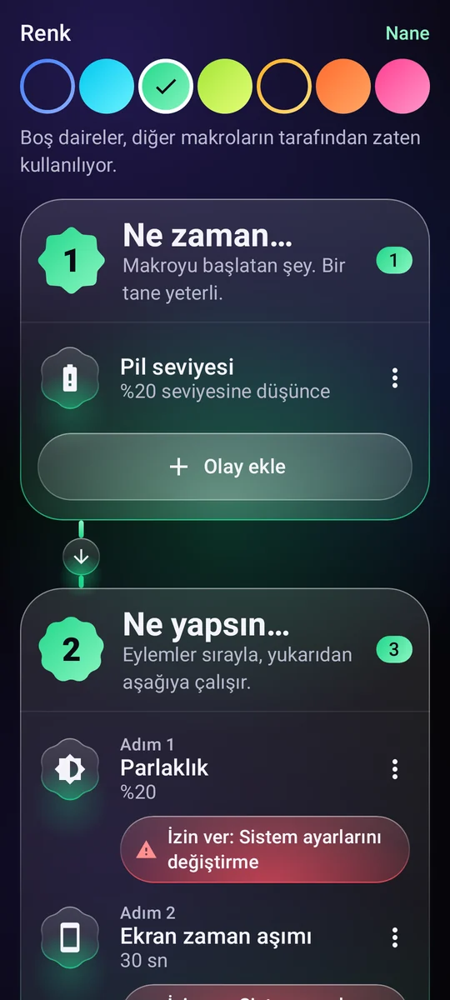
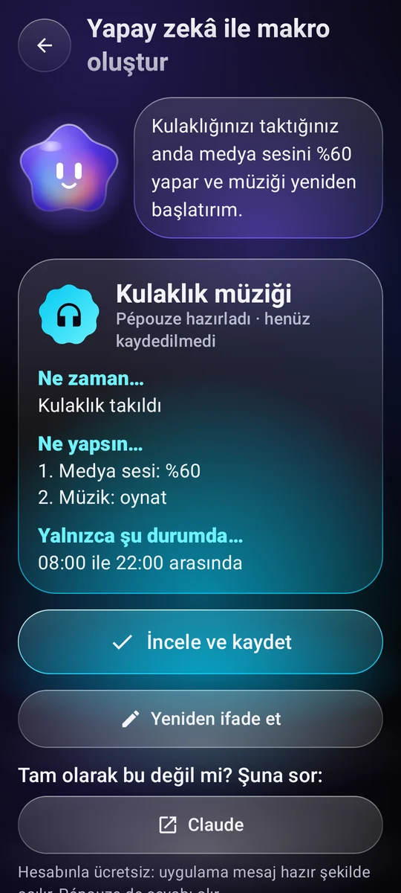
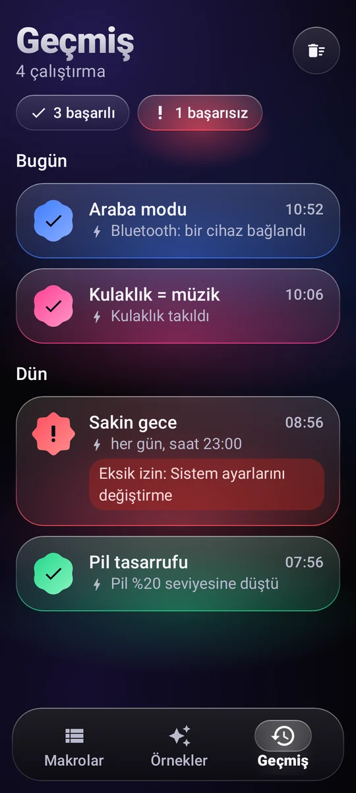

Makroyu başlatan şey
Bir saat ve günler, Wi-Fi, Bluetooth, kulaklık, şarj aleti, pil seviyesi, ekranın açılması, bir uygulamanın açılması…
11 tetikleyiciAndroid için otomasyon
“Ne zaman… Yap…” diye basit bir kural yazın, telefonunuz doğru anda işi kendisi halletsin.
Nasıl çalışır
Her makro tek bir cümleye sığar. Hiç kod yazmadan, üç bloktan oluşturursunuz.
Bir saat ve günler, Wi-Fi, Bluetooth, kulaklık, şarj aleti, pil seviyesi, ekranın açılması, bir uygulamanın açılması…
11 tetikleyiciSes, zil, Rahatsız Etmeyin, parlaklık, el feneri, müzik, alarm, zamanlayıcı, bildirim, bir metni sesli okuma, bir uygulama ya da bağlantı açma, ekrandaki bir metne dokunma…
Birleştirilebilen 29 eylemBir saat aralığı, haftanın günleri, bir pil seviyesi, telefonun şarjda olması.

Örnekler
Bir örneği kopyalayın, kendinize göre uyarlayın, hepsi bu. İşte birkaçı.
Arabanın Bluetooth'una bağlanır bağlanmaz ses yükselir ve müzik kaldığı yerden devam eder.
Saat 23.00'te Rahatsız Etmeyin açılır, parlaklık en aza iner ve müzik durur.
Pil %20'nin altına düşünce ekran kısılır ve daha çabuk kapanır.
Kulaklığınızı taktığınızda müzik yumuşak bir seste başlar.
Sabah şarj aletini çıkardığınızda telefon size saati ve pil durumunu söyler.
Pazardan perşembeye saat 22.30'da telefonu bırakmanız için nazik bir hatırlatma gelir ve ekran kısılır.

Asistanınız Pépouze
Ne istediğinizi tek cümleyle anlatın. Pépouze makroyu hazırlar, siz kontrol edip kaydedersiniz.
Siz“Kulaklığımı taktığımda müziği %60'a getir”
Paylaşın ve çalıştırın
Toplulukla fikir alışverişi yapın, makrolarınızı uygulamayı açmadan bile çalıştırın.
Kullanıcıların paylaştığı makrolardan oluşan bir kütüphane. Beğendiğinizi kopyalayın, kendinizinkileri yayınlayın. Topluluğu görün
Bir arkadaşınıza gösterin, bir videoya koyun: her kamera açar, Pépouze de içe aktarır.
Ana ekranda bir widget, hızlı ayarlarda bir kutucuk ya da bir kısayol: makro hemen çalışır.
Pépouze 13 dil konuşur ve isteklerinizi doğrudan telefonda anlar.
Kontrol sizde
Her çalıştırma, başarılı olsun olmasın, onu neyin tetiklediğiyle birlikte kaydedilir.
Bir izin, yalnızca bir makronun ona ihtiyacı olduğunda ve açıklamasıyla birlikte istenir.
Hesapsız olarak Google Drive'a veya telefona. Ya da hesapla çevrim içi.
Makrolarınız telefonunuzdadır. Ziyaretçi ölçümü yok, hiçbir veri satılmaz.

Fiyat
Lansman döneminde Pépouze tamamen ücretsiz ve reklamsız. Ardından ücretli bir sürüm gelecek: önceden haber vereceğiz ve makrolarınız sizin kalacak.
0 €
Sorular
Yalnızca makrolarınıza eklediğiniz işler için: ekrandaki bir metne dokunmak, Geri veya Ana ekran düğmesine basmak, ekranı kilitlemek, ekran görüntüsü almak, hangi uygulamanın açıldığını anlamak.
Ekrandaki metin yalnızca dokunulacak metni bulmak için okunur ve hiçbir şey telefondan dışarı çıkmaz. Pépouze yalnızca sizin yazdığınız kurallara göre hareket eder. Hizmet yalnızca sizin onayınızla, özel bir açıklamanın ardından etkinleşir ve onu istediğiniz zaman kapatabilirsiniz.
Hayır. Hesap yalnızca makrolarınızı çevrim içi yedeklemeye yarar. Makrolarınızı hiç hesap açmadan bir dosyaya, Google Drive'a veya telefona da kaydedebilirsiniz.
Evet, çoğu çalışır: Pépouze olayları arka planda dinler. Android'in onu uyku moduna almaması için Android ayarlarındaki uygulama sayfasında “Pil: Kısıtlanmamış” seçeneğini seçin. Ekrana dokunan eylemler için telefonun kilidinin açık olması gerekir.
Hayır. “SMS hazırla” eylemi, numara ve metin hazır şekilde mesajlaşma uygulamanızı açar: Gönder'e dokunan sizsiniz.
Uygulamada: Hesabım → Hesabımı sil. Uygulama olmadan hesap silme sayfasındaki adımları izleyin.
Lansman döneminde Android'de ücretsiz.
Pépouze çok yakında. Herkesten önce dene: bize yaz, davetini gönderelim.